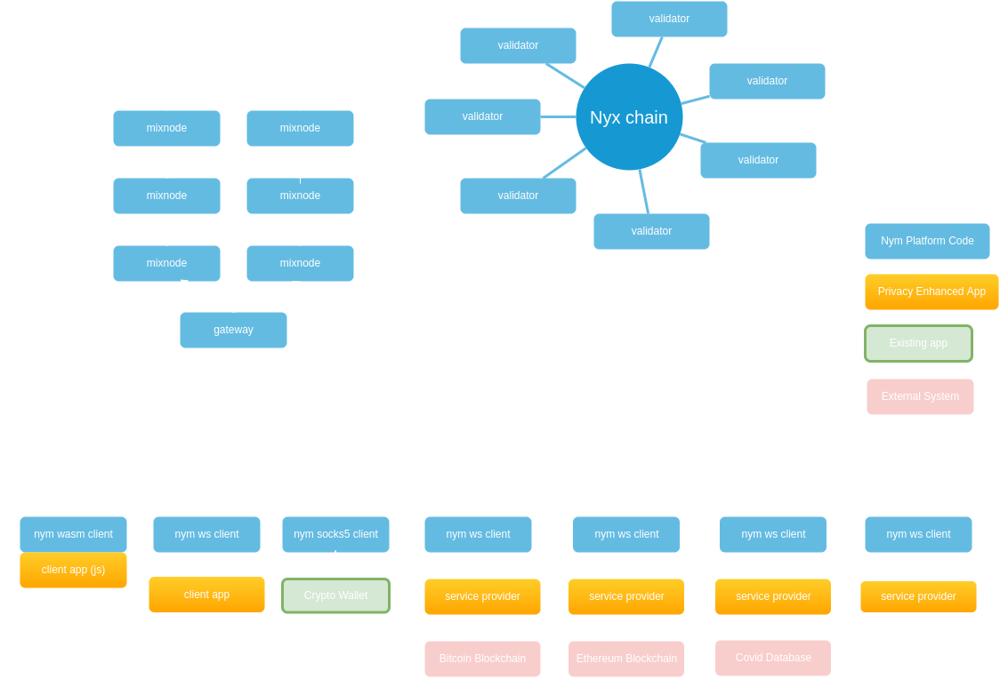
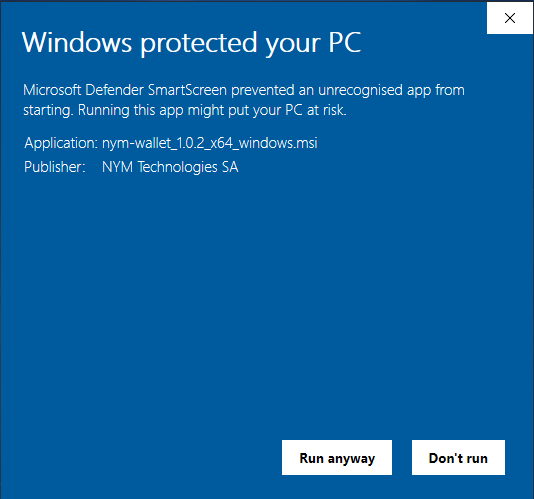
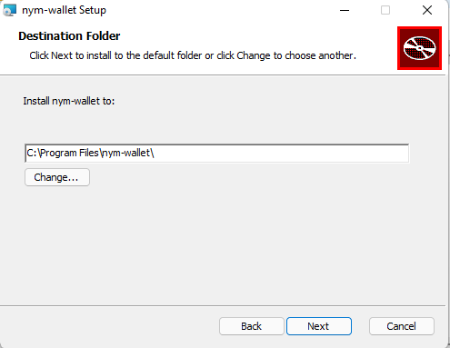
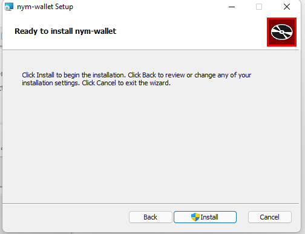

Network Overview
Nym is a privacy platform. It provides strong network-level privacy against sophisticated end-to-end attackers, and anonymous access control using blinded, re-randomizable, decentralized credentials. Our goal is to allow developers to build new applications, or upgrade existing apps, with privacy features unavailable in other systems.
The Nym platform knits together several privacy technologies, integrating them into a system of cooperating networked nodes.
At a high level, our technologies include:
- a mixnet, which encrypts and mixes Sphinx packet traffic so that it cannot be determined who is communicating with whom. Our mixnet is based on a modified version of the Loopix design.
- a privacy enhancing signature scheme called Coconut. Coconut allows a shift in thinking about resource access control, from an identity-based paradigm based on who you are to a privacy-preserving paradigm based on right to use.
- Sphinx, a way of transmitting armoured, layer-encrypted information packets which are indistinguishable from each other at a binary level.
- the Nyx blockchain, a general-purpose CosmWasm-enabled smart contract platform, and the home of the smart contracts which keep track of the mixnet.
The most important thing to note is that these technologies ensure privacy at two different levels of the stack: network data transmission, and transactions.
Here’s an overview diagram of the different types of nodes making up the network:

Developers can think of the network as being comprised of infrastructure nodes and clients for interacting with this infrastructure via Privacy-enhanced applications (PEApps).
Mixnet Infrastructure
The mixnet - the different pieces of software that your traffic will pass through when using an privacy-enhanced app (PEApp) - is made up of several different types of nodes:
-
Mix Nodes provide network security for network content and metadata, making it impossible to see who is communicating with who, by performing packet-mixing on traffic travelling through the network.
-
Gateways act as message storage for clients which may go offline and come back online again, and defend against denial of service attacks. The default gateway implementation included in the Nym platform code holds packets for later retrieval. For many applications (such as simple chat), this is usable out of the box, as it provides a place that potentially offline clients can retrieve packets from. The access token allows clients to pull messages from the gateway node.
-
Services are applications that communicate with nym clients, listening and sending traffic to the mixnet. This is an umbrella term for a variety of different pieces of code, such as the network requester binary.
-
Nyx Blockchain Validators secure the network with proof-of-stake Sybil defenses, determine which nodes are included within the network, and work together to create Coconut threshold credentials which provide anonymous access to data and resources. They also produce blocks and secure the Nyx Blockchain. Initially, this chain was used only to house the CosmWasm smart contracts keeping track of Nym’s network topology, token vesting contracts, and the
NYMtoken itself. In recent months, we’ve decided to expand the role of Nyx and instead expand its role by making it an open smart contract platform for anyone to upload CosmWasm smart contracts to. Validators also provide privacy-enhanced credentials based on the testimony of a set of decentralized, blockchain-based issuing authorities. Nym validators use the Coconut signature scheme to issue credentials. This allows privacy apps to generate anonymous resource claims through decentralised authorities, then use them with Service Providers.
Privacy-enhanced applications (PEApps)
PEApps use a Nym client to connect to the network in order to get the available Network Topology for traffic routing, and send/receive packets to other users and services. Clients, in order to send traffic through the mixnet, connect to gateways. Since applications may go online and offline, a client’s gateway provides a sort of mailbox where apps can receive their messages.
Nym clients connect to gateways. Messages are automatically piped to connected clients and deleted from the gateway’s disk storage. If a client is offline when a message arrives, it will be stored for later retrieval. When the client connects, all messages will be delivered, and deleted from the gateway’s disk.
When it starts up, a client registers itself with a gateway, and the gateway returns an access token. The access token plus the gateway’s IP can then be used as a form of addressing for delivering packets.
There are two basic kinds of privacy enhanced applications:
- Client apps running on mobile or desktop devices. These will typically expose a user interface (UI) to a human user. These might be existing apps such as crypto wallets that communicate with Nym via our SOCKS5 proxy, or entirely new apps.
- Service Providers, which will usually run on a server, and take actions on behalf of users without knowing who they are.
Service Providers (SPs) may interact with external systems on behalf of a user. For example, an SP might submit a Bitcoin, Ethereum or Cosmos transaction, proxy a network request, talk to a chat server, or provide anonymous access to a medical system such as a privacy-friendly coronavirus tracker.
There is also a special category of Service Provider, namely SPs that do not visibly interact with any external systems. You might think of these as crypto-utopiapps: they’re doing something, but it’s not possible from outside to say with any certainty what their function is, or who is interacting with them.
All apps talk with gateways using Sphinx packets and a small set of simple control messages. These messages are sent to gateways over websockets. Each app client has a long-lived relationship with its gateway; Nym defines messages for clients registering and authenticating with gateways, as well as sending encrypted Sphinx packets.
Nym vs Other Systems
Why use Nym: Understanding the Significance of Nym
Nym is the first system we’re aware of which provides integrated protection on both the network and transaction level at once. This seamless approach gives the best possible privacy protections, ensuring that nothing falls through the cracks between systems.
The diagram and brief explainer texts below give a high level overview of the difference between Nym and other comparable systems.
If you want to dig more deeply into the way traffic is packetised and moved through the mixnet, check out the Mixnet Traffic Flow page of the docs.

Nym vs VPNs
The most popular network-level privacy solution currently is the VPN (virtual private network), which provides network-level protection via an encrypted tunnel between a user’s computer and one run by a VPN provider. VPNs are often misconfigured, however, and even when configured correctly, don’t offer real privacy or adequate resistance to censorship.
VPN providers can also fully observe all network traffic between users and the public internet, knowing exactly what services its users are accessing at a given time. The user must trust that the VPN provider is not using their information in a malicious manner or keeping logs.
The Nym mixnet is an anonymous overlay network that provides strong network-level anonymity, even in the face of powerful systems capable of passively monitoring the entire network. The mixnet is decentralized, with no trusted third parties, and so does not require a trusted provider like a VPN. More importantly, Nym provides superior privacy to VPNs and can support high-quality of service and low latency through incentives.
Nym vs Tor
Tor is the best-known anonymous overlay network today. Unlike VPNs, Tor provides a ‘circuit’ of three hops that provides better privacy than single-node VPNs, so any single node in Tor can’t deanonymize traffic. Tor’s onion-routing encrypts traffic between each hop so that only the final hop, the Tor ‘exit node’, can decrypt the package.
However, Tor’s anonymity properties can be defeated by an entity that is capable of monitoring the entire network’s ‘entry’ and ‘exit’ nodes, because while onion-routing encrypts traffic, Tor does not add timing obfuscation or use decoy traffic to obfuscate the traffic patterns which can be used to deanonymize users. Although these kinds of attacks were thought to be unrealistic when Tor was invented, in the era of powerful government agencies and private companies, these kinds of attacks are a real threat. Tor’s design is also based on a centralized directory authority for routing.
While Tor may be the best existing solution for general-purpose web-browsing that accesses the entire internet, it is inarguable that mixnets are better than Tor for message-passing systems such as cryptocurrency transactions and secure messaging, and we believe well designed incentives can also enable the use of Nym as a general purpose decentralized VPN. The Nym mixnet provides superior privacy by making packets indistinguishable from each other, adding cover traffic, and providing timing obfuscation. Unlike both previous mixnet designs and Tor, the Nym mixnet decentralizes its shared operations using blockchain technology and uses incentives to both scale and provide censorship-resistance.
Nym vs I2P
I2P (‘Invisible Internet Project’) replaces Tor’s directory authority with a distributed hash table for routing. How to design a secure and private distributed hash table is still an open research question, and I2P is open to a number of attacks that isolate, misdirect, or deanonymize users. Like Tor, I2P is based on ‘security by obscurity’, where it is assumed that no adversary can watch the entire network. While security by obscurity may have been cutting-edge at the turn of the millennium, such an approach is rapidly showing its age.
Nym’s cutting-edge mixnet design guarantees network anonymity and resistance to surveillance even in the face of powerful deanonymizing attacks. Unlike I2P, Nym adds decoy traffic and timing obfuscation. Rather than a centralized directory authority or distributed hash table, Nym uses blockchain technology and economic incentives to decentralize its network.The Nym mixnet can anonymize metadata even against government agencies or private companies who can monitor network links and observe the incoming and outgoing traffic of all clients and servers.
Nym vs Facebook Connect
The Nym credential system decentralizes the functions of systems like Facebook Connect while adding privacy. Personal data has become a toxic asset, even to companies who base their entire business around it, as evidenced by the hack of Facebook’s OAuth identity system in 2018 and the subsequent release of the data of 50 million users.
Unlike Facebook Connect and similar OAuth-based services like Sign in with Google, traditional usernames and passwords, or even public/private key pairs, Nym credentials allow users to authenticate and authorize data sharing without unwillingly revealing any information to a third party. There is no central third party in charge of the credentials, and users remain totally in control of their own data, disclosing it only to those who they want to. A user can store their data wherever they want (including on their own devices), and unlike alternatives like W3C’s DIDs, a user does not store anything on the blockchain, offering better privacy.
Mixnet Traffic Flow
Technical Motivations
When you send data across the internet, it can be recorded by a wide range of observers: your ISP, internet infrastructure providers, large tech companies, and governments.
Even if the content of a network request is encrypted, observers can still see that data was transmitted, its size, frequency of transmission, and gather metadata from unencrypted parts of the data (such as IP routing information). Adversaries may then combine all the leaked information to probabilistically de-anonymize users.
The Nym mixnet provides very strong security guarantees against this sort of surveillance. It packetises and mixes together IP traffic from many users inside the mixnet.
If you’re into comparisons, the Nym mixnet is conceptually similar to other systems such as Tor, but provides improved protections against end-to-end timing attacks which can de-anonymize users. When Tor was first fielded, in 2002, those kinds of attacks were regarded as science fiction. But the future is now here.
Mixnet Traffic Flow
The Nym mixnet re-orders encrypted, indistinguishable Sphinx packets as they travel through the gateways and mix nodes.
Traffic to send through the mixnet is broken up into uniformly-sized packets, encrypted in the Sphinx packet format according to the route the packet will take, and sent through the mixnet to be mixed among other real traffic and fake - but identical - ‘dummy traffic’.
At each ‘hop’ (i.e. as a packet is forwarded from one node in the sequence to another) a layer of decryption is removed from the Sphinx packet, revealing the address of the next hop, and another Sphinx packet. The packet is then held by the node for a variable amount of time, before being forwarded on to the next node in the route.
Traffic always travels through the nodes of the mixnet like such:
+----------+ +----------+ +----------+
| Mix Node |<-----------> | Mix Node |<----------->| Mix Node |
| Layer 1 | | Layer 2 | | Layer 3 |
+----------+ +----------+ +----------+
^ ^
| |
| |
v v
+--------------+ +-----------------+
| Your gateway | | Service gateway |
+--------------+ +-----------------+
^ ^
| |
| |
v v
+-------------------+ +-------------------+
| +---------------+ | | +---------------+ |
| | Nym client | | | | Nym Client | |
| +---------------+ | | +---------------+ |
| ^ | | ^ |
| | | | | |
| | | | | |
| v | | v |
| +---------------+ | | +---------------+ |
| | Your app code | | | | Service Code | |
| +---------------+ | | +---------------+ |
+-------------------+ +-------------------+
Your Local Machine** Service Provider Machine**
** note that depending on the technical setup, the Nym client running on these machines may
be either a seperate process or embedded in the same process as the app code via one of our SDKs.
From your Nym client, your encrypted traffic is sent to:
- the gateway your client has registered with,
- a mix node on layer 1 of the Mixnet,
- a mix node on layer 2 of the Mixnet,
- a mix node on layer 3 of the Mixnet,
- the recipient’s gateway, which forwards it finally to…
- the recipient’s Nym client, which communicates with an application.
If the recipient’s Nym client is offline at the time then the packets will be held by the Gateway their Nym client has registered with until they come online.
Whatever is on the ‘other side’ of the mixnet from your client, all traffic will travel this way through the mixnet. If you are sending traffic to a service external to Nym (such as a chat application’s servers) then your traffic will be sent from the recieving Nym client to an application that will proxy it ‘out’ of the mixnet to these servers, shielding your metadata from them. P2P (peer-to-peer) applications, unlike the majority of apps, might want to keep all of their traffic entirely ‘within’ the mixnet, as they don’t have to necessarily make outbound network requests to application servers. They would simply have their local application code communicate with their Nym clients, and not forward traffic anywhere ‘outside’ of the mixnet.
Acks & Package Retransmission
Whenever a hop is completed, the receiving node will send back an acknowledgement (‘ack’) so that the sending node knows that the packet was received. If it does not receive an ack after sending, it will resend the packet, as it assumes that the packet was dropped for some reason. This is done under the hood by the binaries themselves, and is never something that developers and node operators have to worry about dealing with themselves.
Packet retransmission means that if a client sends 100 packets to a gateway, but only receives an acknowledgement (‘ack’) for 95 of them, it will resend those 5 packets to the gateway again, to make sure that all packets are received. All nodes in the mixnet support packet retransmission.
+-------------------+ +-------------------+
| +---------------+ | | | Packet lost in transmission - no ack recieved!
| | Nym client | | | |-----------------?
| +-------^-------+ |Send 100 packets | |
| | |----------------->| Gateway your | Resend packet +------------------+ etc...
| | | | client is |------------------>| |------------------>
| | | | connected to | | Mix node layer 1 |
| v | Send 100 acks | |<------------------| |
| +---------------+ |<-----------------| | Send ack +------------------+
| | Your app code | | | |
| +---------------+ | | |
+-------------------+ +-------------------+
Your Local Machine
Private Replies using SURBs
SURBs (‘Single Use Reply Blocks’) allow apps to reply to other apps anonymously.
It will often be the case that a client app wants to interact with a service of some kind, or a P2P application on someone else’s machine. It sort of defeats the purpose of the whole system if your client app needs to reveal its own gateway public key and client public key in order to get a response from the service/app.
Luckily, SURBs allow for anonymous replies. A SURB is a layer encrypted set of Sphinx headers detailing a reply path ending in the original app’s address. SURBs are encrypted by the client, so the recieving service/app can attach its response and send back the resulting Sphinx packet, but it never has sight of who it is replying to.
MultiSURBs were implemented in v1.1.4. Clients, when sending a message to another client, attach a bundle of SURBs which can be used by the receiver to construct large anonymous replies, such as files. If a reply is too large still (i.e. it would use more SURBs than sent with the original message), the receiver will use a SURB to ask the sender for more SURBs.
What this means in practice is that files can now be sent via anonymous replies!
Addressing System
When a Nym client is initalised, it generates and stores its own public/private keypair locally. When the client starts, it automatically connects to the Nym network and finds out what Nym infrastructure exists. It then chooses and connects to a specific Gateway node via websocket.
All apps in the Nym network therefore have an address, in the format:
user-identity-key.user-encryption-key@gateway-identity-key
Which in practice, looks something like this:
DguTcdkWWtDyUFLvQxRdcA8qZhardhE1ZXy1YCC7Zfmq.Dxreouj5RhQqMb3ZaAxgXFdGkmfbDKwk457FdeHGKmQQ@4kjgWmFU1tcGAZYRZR57yFuVAexjLbJ5M7jvo3X5Hkcf
This is obviously not very user-friendly and the moment, and will be developed on in the coming months.
Pre-built Binaries
The Github releases page has pre-built binaries which should work on Ubuntu 20.04 and other Debian-based systems, but at this stage cannot be guaranteed to work everywhere.
If the pre-built binaries don’t work or are unavailable for your system, you will need to build the platform yourself.
Binary Initialisation and Configuration
All Nym binaries must first be made executable and initialised with init before being run.
To make a binary executable, open terminal in the same directory and run:
chmod +x <BINARY_NAME>
# for example: chmod +x nym-mixnode
The init command is usually where you pass flags specifying configuration arguments such as the gateway you wish to communicate with, the ports you wish your binary to listen on, etc.
The init command will also create the necessary keypairs and configuration files at ~/.nym/<BINARY_TYPE>/<BINARY_ID>/ if these files do not already exist. It will not overwrite existing keypairs if they are present.
You can reconfigure your binaries at any time by editing the config file located at ~/.nym/<BINARY_TYPE>/<BINARY_ID>/config/config.toml and restarting the binary process.
Once you have run init, you can start your binary with the run command, usually only accompanied by the id of the binary that you specified.
This id is never transmitted over the network, and is used to select which local config and key files to use for startup.
Building from Source
Nym runs on Mac OS X, Linux, and Windows. All nodes except the Desktop Wallet and NymConnect on Windows should be considered experimental - it works fine if you’re an app developer but isn’t recommended for running nodes.
Building Nym
Nym has two main codebases:
- the Nym platform, written in Rust. This contains all of our code except for the validators.
- the Nym validators, written in Go.
This page details how to build the main Nym platform code. If you want to build and run a validator, go here instead.
Prerequisites
- Debian/Ubuntu:
pkg-config,build-essential,libssl-dev,curl,jq,git
apt install pkg-config build-essential libssl-dev curl jq git
- Arch/Manjaro:
base-devel
pacman -S base-devel
- Mac OS X:
pkg-config,brew,openss1,protobuf,curl,gitRunning the following the script installs Homebrew and the above dependencies:
/bin/bash -c "$(curl -fsSL https://raw.githubusercontent.com/Homebrew/install/HEAD/install.sh)"
Rust & cargo >= 1.66
We recommend using the Rust shell script installer. Installing cargo from your package manager (e.g. apt) is not recommended as the packaged versions are usually too old.
If you really don’t want to use the shell script installer, the Rust installation docs contain instructions for many platforms.
Download and build Nym binaries
The following commands will compile binaries into the nym/target/release directory:
rustup update
git clone https://github.com/nymtech/nym.git
cd nym
git reset --hard # in case you made any changes on your branch
git pull # in case you've checked it out before
git checkout master # master branch has the latest release version: `develop` will most likely be incompatible with deployed public networks
cargo build --release # build your binaries with **mainnet** configuration
Quite a bit of stuff gets built. The key working parts are:
- Nym Node:
nym-node - Validator
- websocket client:
nym-client - socks5 client:
nym-socks5-client - webassembly client:
webassembly-client - nym-cli tool:
nym-cli - nym-api:
nym-api - nymvisor:
nymvisor
The repository also contains Typescript applications which aren’t built in this process. These can be built by following the instructions on their respective docs pages.
You cannot build from GitHub’s .zip or .tar.gz archive files on the releases page - the Nym build scripts automatically include the current git commit hash in the built binary during compilation, so the build will fail if you use the archive code (which isn’t a Git repository). Check the code out from github using
git cloneinstead.
Node Types
We are working on a detailed description of how each component of Nym Mixnet and Nyx blockchain functions, as well as references to any literature and technical specs.
Meanwhile please refer to our Operators Guide book.
Desktop Wallet
The Nym Desktop Wallet lets you interact with your Nym node and to delegate stake to others, see the vesting schedule of tokens, and transfer tokens. In future releases, it will also let you access the Nym mixnet.
You can download it for Mac, Windows, or Linux.
Bypassing security warnings
On Windows you will see a security warning pop up when you attempt to run the wallet. We are in the process of getting app store keys from Microsoft so that this doesn’t happen. See the section below for details on steps to bypass these.
Linux
You will need to chmod +x the AppImage in the terminal (or give it execute permission in your file browser) before it will run.
Windows
You will still encounter warnings when opening the wallet on Windows. This is because - although the wallet is approved by Microsoft - it has less than 10 thousand downloads at the current time. Once the wallet has passed this threshold, this warning will disappear.
Follow the steps below to bypass the warnings.
- Select more-info after clicking the msi installer app:

- Proceed to ‘run-anyway’:

- Follow the installer instructions:



For developers
If you would like to the compile the wallet yourself, follow the instructions below.
Please note that the wallet has currently only been built on the operating systems for which there are binaries as listed above. If you find an issue or any additional prerequisties, please create an issue or PR against
developon Github.
Software prerequisites for building the wallet
git
sudo apt update
sudo apt install git
Verify git is installed with:
git version
# Should return: git version X.Y.Z
-
NodeJS >= v16.8.0 -
Rust & cargo >= v1.56
We recommend using the Rust shell script installer. Installing cargo from your package manager (e.g. apt) is not recommended as the packaged versions are usually too old.
If you really don’t want to use the shell script installer, the Rust installation docs contain instructions for many platforms.
Additional prerequisites for Ubuntu/Debian systems
sudo apt update
sudo apt install pkg-config build-essential libssl-dev curl jq
Additional prerequisites for Windows
- When running on Windows you will need to install the
c++build tools. - An easy guide to get Rust up and running can be found here.
- When installing
NodeJSplease use thecurrent featuresversion. - Using a package manager like Chocolatey is recommended.
Removing signing errors when building in development mode
If you’re wanting to build the wallet yourself, you will need to make a few modifications to the file located at nym-wallet/src-tauri/tauri.conf.json before doing so. These relate to the wallet being accepted by Mac and Windows app stores, and so aren’t relevant to you when building and running the wallet yourself.
On all operating systems:
- set the value of line 49 to
false - remove lines 50 to 54
As well as these modifications for MacOS and Windows users:
- MacOS users must also remove line 39
- Windows users must remove lines 42 to 46
Installation
Once you have made these modifications to tauri.conf.json, inside of the nym-wallet folder, run:
yarn install
Running in Development Mode
Make sure you copy over the contents of the provided
.env.sampleto a new.envfile before proceeding
You can run the wallet without having to install it in development mode by running the following terminal command from the nym-wallet folder
yarn dev
This will then start the Wallet GUI and produce a binary in nym-wallet/target/debug/ named nym-wallet.
Running in Production Mode
Make sure you copy over the contents of the provided
.env.sampleto a new.envfile before proceeding
To build and install the wallet, run the following terminal command from the nym-wallet folder.
yarn build
This will build an executable file that you can use to install the wallet on your machine. The output will compile different types of binaries dependent on your hardware / OS system. Once the binaries are built, they can be located as follows:
Binary output directory structure
**macos**
|
└─── target/release
| |─ nym-wallet
└───target/release/bundle/dmg
│ │─ bundle_dmg.sh
│ │─ nym-wallet.*.dmg
└───target/release/bundle/macos/MacOs
│ │─ nym-wallet
|
**Linux**
└─── target/release
| │─ nym-wallet
└───target/release/bundle/appimage
│ │─ nym-wallet_*_.AppImage
│ │─ build_appimage.sh
└───target/release/bundle/deb
│ │─ nym-wallet_*_.deb
|
**Windows**
└─── target/release
| │─ nym-wallet.exe
└───target/release/bundle/msi
│ │─ nym-wallet_*_.msi
Importing or creating account(s) when you have signed in with mnemonic
To import or create a new account, first you need to create a password for your wallet:
- Log out from the wallet
- Sign in using “Sign in with mnemonic” button
- On the next screen select “Create a password“
- Type in the mnemonic you want to create a password for and follow the next steps
- Sign back in the wallet using your new password
- Come back to this page to import or create new accounts
Importing or creating account(s) when you have signed in with mnemonic but a password already exists on your machine
To import or create a new account, you need to log in with your existing password or create a new password.
Creating a new password will overwrite any old one stored on your machine. Make sure you have saved any mnemonics associated with the password before creating a new one.
- Log out
- Click on “Forgot password”
- On the next screen select “Create new password”
- Follow the instructions and create a new password
- Sign in using your new password
CLI tool for wallet encrypted file (password) recovery:
The mnemonics that are stored in the local password protected file can also be decrypted and recovered through a simple CLI tool, nym-wallet-recovery-cli.
nym-wallet-recovery –file saved-wallet.json –password foo
The saved wallet file can be found in $XDG_DATA_HOME or $HOME/.local/share on Linux, $HOME/Library/Application Support on Mac, and C:\Users\username\AppData\Local on Windows.
CLI Wallet
If you have already read our validator setup and maintenance documentation you will have seen that we compile and use the nyxd binary primarily for our validators. This binary can however be used for many other tasks, such as creating and using keypairs for wallets, or automated setups that require the signing and broadcasting of transactions.
Using nyxd binary as a CLI wallet
You can use the nyxd as a minimal CLI wallet if you want to set up an account (or multiple accounts). Just compile the binary as per the documentation, stopping after the building your validator step is complete. You can then run nyxd keys --help to see how you can set up and store different keypairs with which to interact with the Nyx blockchain.
For more on interacting with the chain, see the Interacting with Nyx Chain and Smart Contracts page.
Mixnet Explorer
The Nym Network Explorer lets you explore the Nym network. We have open-sourced the explorer so that anyone can run an instance of it, further decentralising the network!
Prerequisites
git
sudo apt update
sudo apt install git
Verify git is installed with:
git version
# Should return: git version X.Y.Z
- (Debian/Ubuntu)
pkg-config,build-essential,libssl-dev,curl,jq
sudo apt update
sudo apt install pkg-config build-essential libssl-dev curl jq
-
NodeJS(usenvm installto automatically install the correct version) andnpm -
Rust & cargo >= 1.66
We recommend using the Rust shell script installer. Installing cargo from your package manager (e.g. apt) is not recommended as the packaged versions are usually too old.
If you really don’t want to use the shell script installer, the Rust installation docs contain instructions for many platforms.
Local Development
Complete the steps in the building nym section, before cd-ing into nym/explorer.
Start a development server with hot reloading running on http://localhost:3000 with the following commands from inside the explorer directory:
nvm install # install relevant nodejs and npm versions
npm install
npm run start
eslint and prettier are already configured.
You can lint the code by running:
npm run lint
This command will only show linting errors and will not fix them!
To fix all linting errors automatically run:
npm run lint:fix
Please see the development docs in explorer/docs for more information on the structure and design of this app.
Deployment
Complete the steps in the building nym section, before cd-ing into nym/explorer.
The Network Explorer should be run on a machine with at least 4GB of RAM - the build process might fail if run on a less powerful machine.
Building the Explorer UI
Build the UI with these commands from within the explorer directory:
nvm install # install relevant nodejs and npm versions
npm install
npm run build
The output will be in the dist directory.
This can then be either served directly from the nym directory, or from its own directory if you wish. See the template nginx config below for more on how to host this.
Building the Explorer API
The Explorer API was built in the previous step with cargo build.
Automating the explorer with systemd
You will most likely want to automate the Explorer-API restarting if your server reboots. Below is a systemd unit file to place at /etc/systemd/system/nym-explorer-api.service:
[Unit]
Description=Nym Explorer API (1.1.0)
StartLimitIntervalSec=350
StartLimitBurst=10
[Service]
User=nym
Type=simple
Environment="API_STATE_FILE=/home/nym/network-explorer/explorer-api-state.json"
Environment="GEO_IP_SERVICE_API_KEY=c69155d0-25f6-11ec-80bc-75e5dbd322c3"
ExecStart=explorer/api/location
Restart=on-failure
RestartSec=30
[Install]
WantedBy=multi-user.target
Proceed to start it with:
systemctl daemon-reload # to pickup the new unit file
systemctl enable nymd # to enable the service
systemctl start nymd # to actually start the service
journalctl -f # to monitor system logs showing the service start
Installing and configuring nginx for HTTPS
Setup
Nginx is an open source software used for operating high-performance web servers. It allows us to set up reverse proxying on our validator server to improve performance and security.
Install nginx and allow the ‘Nginx Full’ rule in your firewall:
sudo ufw allow 'Nginx Full'
Check nginx is running via systemctl:
systemctl status nginx
Which should return:
● nginx.service - A high performance web server and a reverse proxy server
Loaded: loaded (/lib/systemd/system/nginx.service; enabled; vendor preset: enabled)
Active: active (running) since Fri 2018-04-20 16:08:19 UTC; 3 days ago
Docs: man:nginx(8)
Main PID: 2369 (nginx)
Tasks: 2 (limit: 1153)
CGroup: /system.slice/nginx.service
├─2369 nginx: master process /usr/sbin/nginx -g daemon on; master_process on;
└─2380 nginx: worker process
Configuration
Replace the default nginx configuration at /etc/nginx/sites-available/ with:
server {
listen 80;
listen [::]:80;
server_name domain;
root html_location;
location / {
try_files /$uri /$uri/index.html /index.html =404;
}
location /api {
proxy_pass http://127.0.0.1:8000;
rewrite /api/(.*) /$1 break;
proxy_set_header X-Real-IP $remote_addr;
proxy_set_header Host $host;
proxy_set_header X-Real-IP $remote_addr;
}
}
Followed by:
sudo apt install certbot nginx python3
certbot --nginx -d nym-validator.yourdomain.com -m you@yourdomain.com --agree-tos --noninteractive --redirect
Configure your firewall
The following commands will allow you to set up a firewall using ufw.
# check if you have ufw installed
ufw version
# if it is not installed, install with
sudo apt install ufw -y
# enable ufw
sudo ufw enable
# check the status of the firewall
sudo ufw status
Now open the ports:
sudo ufw allow 22,80,443/tcp
# check the status of the firewall
sudo ufw status
Interacting with Nyx Chain and Smart Contracts
There are two options for interacting with the blockchain to send tokens or interact with deployed smart contracts:
Nym-CLItoolnyxdbinary
Nym-CLI tool (recommended in most cases)
The nym-cli tool is a binary offering a simple interface for interacting with deployed smart contract (for instance, bonding and unbonding a mix node from the CLI), as well as creating and managing accounts and keypairs, sending tokens, and querying the blockchain.
Instructions on how to do so can be found on the nym-cli docs page, and there are example commands in the integrations FAQ.
Nyxd binary
The nyxd binary, although more complex to compile and use, offers the full range of commands availiable to users of CosmosSDK chains. Use this if you are (e.g.) wanting to perform more granular queries about transactions from the CLI.
You can use the instructions on how to do this on from the gaiad docs page, and there are example commands in the integrations FAQ.
Smart Contracts
The Nyx blockchain is based on CosmWasm. It allows users to code smart contracts in a safe subset of the Rust programming language, easily export them to WebAssembly, and upload them to the blockchain. Information about the chain can be found on the Nyx blockchain explorer.
There are currently two smart contracts on the Nyx chain:
- the Mixnet contract which manages the network topology of the mixnet, tracking delegations and rewarding.
- the Vesting contract which manages
NYMtoken vesting functionality.
Users will soon be able to create and upload their own CosmWasm smart contracts to Nyx and take advantage of applications such as the Coconut Credential Scheme - more to be announced regarding this very soon.
Mixnet Contract
The Mixnet smart contract is a core piece of the Nym system, functioning as the mixnet directory and keeping track of delegations and rewards: the core functionality required by an incentivised mixnet. You can find the code and build instructions here.
Functionality
The Mixnet contract has multiple functions:
- storing bonded mix node and gateway information (and removing this on unbonding).
- providing the network-topology to the (cached) validator API endpoint used by clients on startup for routing information.
- storing delegation and bond amounts.
- storing reward amounts.
The addresses of deployed smart contracts can be found in the network-defaults directory of the codebase alongside other network default values.
Vesting Contract
The vesting contract allows for the creation of vesting accounts, allowing NYM tokens to vest over time, and for users to minimally interact with the Mixnet using their unvested tokens. You can find the code and build instructions here.
Functionality
The Vesting contract has multiple functions:
- Creating and storing vesting
NYMtoken vesting accounts. - Interacting with the Mixnet using vesting (i.e. non-transferable) tokens, allowing users to delegate their unvested tokens.
The addresses of deployed smart contracts can be found in the network-defaults directory of the codebase alongside other network default values.
RPC Nodes
RPC Nodes (which might otherwise be referred to as ‘Lite Nodes’ or just ‘Full Nodes’) differ from Validators in that they hold a copy of the Nyx blockchain, but do not participate in consensus / block-production.
You may want to set up an RPC Node for querying the blockchain, or in order to have an endpoint that your app can use to send transactions.
In order to set up an RPC Node, simply follow the instructions to set up a Validator, but exclude the nyxd tx staking create-validator command.
If you want to fast-sync your node, check out the Polkachu snapshot and their other resources.
Ledger Live Support
Use the following instructions to interact with the Nyx blockchain - either with deployed smart contracts, or just to send tokens - using your Ledger device to sign transactions.
Prerequisites
- Download and install Ledger Live.
- Compile the
nyxdbinary as per the instructions here. Stop after you can successfully runnyxdand get the helptext in your console output.
Prepare your Ledger App
- Plug in your Ledger device
- Install the
Cosmos (ATOM)app by following the instructions here. This app allows you to interact with any Cosmos SDK chain - you can manage your ATOM, OSMOSIS, NYM tokens, etc. - On the device, navigate to the Cosmos app and open it
Create a keypair
Add a reference to the ledger device on your local machine by running the following command in the same directory as your nyxd binary:
nyxd keys add ledger_account --ledger
Command help with nyxd
More information about each command is available by consulting the help section (--help) at each layer of nyxd’s commands:
# logging top level command help
nyxd --help
# logging top level command help for transaction commands
nyxd tx --help
# logging top level command help for transaction commands utilising the 'bank' module
nyxd tx bank --help
Sending tokens between addresses
Perform a transaction from the CLI with nyxd, appending the --ledger option to the command.
As an example, the below command will send 1 NYM from the ledger account to the $DESTINATION_ACCOUNT:
nyxd tx bank send ledger_account $DESTINATION_ACCOOUNT 1000000unym --ledger --node https://rpc.dev.nymte.ch:443
When a command is run, the transaction will appear on the Ledger device and will require physical confirmation from the device before being signed.
Nym-specific transactions
Nym-specific commands and queries, like bonding a mix node or delegating unvested tokens, are available in the wasm module, and follow the following pattern:
# Executing commands
nyxd tx wasm execute $CONTRACT_ADDRESS $JSON_MSG
# Querying the state of a smart contract
nyxd query wasm contract-state smart $CONTRACT_ADDRESS $JSON_MSG
You can find the value of $CONTRACT_ADDRESS in the network defaults file.
The value of $JSON_MSG will be a blog of json formatted as defined for each command and query. You can find these definitions for the mixnet smart contract here and for the vesting contract here under ExecuteMsg and QueryMsg.
Example command execution:
Delegate to a mix node
You can delegate to a mix node from the CLI using nyxd and signing the transaction with your ledger by filling in the values of this example:
CONTRACT_ADDRESS=mixnet_contract_address
./nyxd tx wasm execute $CONTRACT_ADDRESS '{"delegate_to_mixnode":{"mix_identity":"MIX_NODE_IDENTITY","amount":{"amount":"100000000000","denom":"unym"}}}' --ledger --from admin --node https://rpc.dev.nymte.ch:443 --gas-prices 0.025unymt --gas auto -b block
By replacing the value of
CONTRACT_ADDRESSwith the address of the vesting contract, you could use the above command to use tokens held in the vesting contract.
Query a vesting schedule
You can query for (e.g.) seeing the current vesting period of an address by filling in the values of the following:
CONTRACT_ADDRESS=vesting_contract_address
nyxd query wasm contract-state smart $CONTRACT_ADDRESS '{"get_current_vesting_period"}:{"address": "address_to_query_for"}' --ledger --from admin --node https://rpc.dev.nymte.ch:443 --chain-id qa-net --gas-prices 0.025unymt --gas auto -b block
Coconut
Coconut is in active development - stay tuned for code and integration examples
Coconut is a cryptographic signature scheme that produces privacy-enhanced credentials. It lets application programmers who are concerned with resource access control to think and code in a new way.
Most of the time, when we build system security, we think of who questions:
- Has Alice identified herself (authentication)?
- Is Alice allowed to take a specific action (authorisation)?
Coconut fundamentally changes these questions. Rather than asking who a user is, it allows application designers to ask different questions, mostly centered around questions of rights:
- Does the entity taking this action have a right to do X?
This allows a different kind of security. Many of the computer systems we talk to every day don’t need to know who we are, they only need to know if we have a right to use the system. Coconut allows signing authorities and validators to work together to determine whether a given private key holder has a right to take an action. The credentials are generated cooperatively by decentralised, trustless systems.
Once the credentials are generated, they can be re-randomized: entirely new credentials, which no one has ever seen before, can be presented to service providers, and magically validated without being linkable back to the credential originally given out by validators.
These properties allow Coconut credentials to act as something like a decentralized and fully private version of OAuth credentials, or like cryptographic bearer tokens generated by decentralised systems. The tokens can be mutated so that they are not traceable, but still verified with the original permissions intact.
Users present cryptographic claims encoded inside the credentials to get secure access to resources despite the systems verifying credential usage not being able to know who they are.
Re-randomisation vs pseudonymity
We stand on the shoulders of giants. Ten years ago, Bitcoin showed the way forward by allowing people to control resource access without recourse to who questions. Rather, in Bitcoin and succeeding blockchains, a private key proves a right to use.
But as we can now see, private keys in blockchain systems act only as a minor barrier to finding out who is accessing resources. A Bitcoin or Ethereum private key is effectively a long-lived pseudonym which is easily traceable through successive transactions.
Coconut allows us to build truly private systems rather than pseudonymous ones.
How does Coconut work?
Just like normal credentials, Nym’s Coconut credentials can be signed with a secret key and later verified by anybody with the correct public key. But Nym credentials have additional superpowers when compared to “normal” signature schemes like RSA or DSA.
Specifically, Coconut is a blinded, re-randomizable, selective disclosure threshold credential signature scheme. That’s quite a mouthful, so let’s break it down into its component parts.
Let’s say you have a message with the content This credential controls X in hand. In addition to the normal sign(message, secretKey) and verify(message, publicKey) functions present in other signature schemes, Coconut adds the following:
-
Blind signatures - disguises message content so that the signer can’t see what they’re signing. This defends users against signers: the entity that signed can’t identify the user who created a given credential, since they’ve never seen the message they’re signing before it’s been blinded (turned into gobbledygook). Coconut uses zero-knowledge proofs so that the signer can sign confidently without seeing the unblinded content of the message.
-
Re-randomizable signatures - take a signature, and generate a brand new signature that is valid for the same underlying message
This credential controls X. The new bitstring in the re-randomized signature is equivalent to the original signature but not linkable to it. So a user can “show” a credential multiple times, and each time it appears to be a new credential, which is unlinkable to any previous “show”. But the underlying content of the re-randomized credential is the same (including for things like double-spend protection). This once again protects the user against the signer, because the signer can’t trace the signed message that they gave back to the user when it is presented. It also protects the user against the relying party that accepts the signed credential. The user can show re-randomized credentials repeatedly, and although the underlying message is the same in all cases, there’s no way of tracking them by watching the user present the same credential multiple times. -
Selective disclosure of attributes - allows someone with the public key to verify some, but not all, parts of a message. So you could for instance selectively reveal parts of a signed message to some people, but not to others. This is a very powerful property of Coconut, potentially leading to diverse applications: voting systems, selective revelation of medical data, privacy-friendly KYC systems, etc.
-
Threshold issuance - allows signature generation to be split up across multiple nodes and decentralized, so that either all signers need to sign (n of n where n is the number of signers) or only a threshold number of signers need to sign a message (t of n where t is the threshold value).
Taken together, these properties provide privacy for applications when it comes to generating and using signatures for cryptographic claims. If you compare it to existing tech, you might think of it as a sort of supercharged decentralized privacy-friendly JWT.
A slightly expanded view of Coconut is available in this blog post.
Using Coconut for blockchain transaction privacy
In the context of a blockchain currency system, Coconut allows us to create a privacy-enhanced Coconut credential which provably represents an amount under control of a given entity. The credential can then be “spent” anonymously, as if it were the original value. Double-spending protections apply to the credential, so it can only be spent once. Nyx Validators can then unlock the value so it can be redeemed by the party holding the credential.
Although there’s still work to be done to integrate it against various blockchains, in principle Coconut can anonymise blockchain transactions in any system which provides multi-sig. We’re working on Cosmos integration at the moment. Bitcoin and Ethereum are also obvious targets here.
Coconut is simple and flexible, and can ensure privacy for more than coin transfers; it can provide privacy for more complex smart contracts as well.
Finally, it should be mentioned that Coconut can be applied to both blockchain and non-blockchain systems - it’s a general purpose technology.
Bandwidth Credentials
You can now try using Nym Bandwidth Credentials in our Sandbox testnet environment.
Create a sandbox.env file with the following details:
CONFIGURED=true
NETWORK_NAME=sandbox
RUST_LOG=info
RUST_BACKTRACE=1
BECH32_PREFIX=nymt
MIX_DENOM=unymt
MIX_DENOM_DISPLAY=nymt
STAKE_DENOM=unyxt
STAKE_DENOM_DISPLAY=nyxt
DENOMS_EXPONENT=6
REWARDING_VALIDATOR_ADDRESS="nymt1mxuweurc066kprnngtm8zmvam7m2nw26yatpmv"
MIXNET_CONTRACT_ADDRESS="nymt1dlsvvgey26ernlj0sq2afjluh3qd4ap0k9eerekfkw5algqrwqksaf2qf7"
VESTING_CONTRACT_ADDRESS="nymt19g9xuqrvz2frv905v3fc7puryfypluhg383q9zwsmedrlqekfgys62ykm4"
MULTISIG_CONTRACT_ADDRESS="nymt142dkm8xe9f0ytyarp7ww4kvclva65705jphxsk9exn3nqdsm8jkqnp06ac"
COCONUT_BANDWIDTH_CONTRACT_ADDRESS="nymt1ty0frysegskh6ndm3v96z5xdq66qzcu0aw7xcxlgp54jg0mjwlgqplc6v0"
COCONUT_DKG_CONTRACT_ADDRESS="nymt1gwk6muhmzeuxje7df7rjvqwl2vex0kj4t2hwuzmyx5k62kfusu5qk4k5z4"
GROUP_CONTRACT_ADDRESS="nymt14ry36mwauycz08v8ndcujghxz4hmua5epxcn0mamlr3suqe0l2qsqx5ya2"
STATISTICS_SERVICE_DOMAIN_ADDRESS="http://0.0.0.0"
NYXD="https://rpc.sandbox.nymtech.net"
NYM_API="https://sandbox-validator1-api.nymtech.net/api"
Create an account on Sandbox using the nym-cli:
./nym-cli --config-env-file <path-to>sandbox.env account create
You will need nymt funds sent to this account. Get in touch via Nym Telegram or Discord and we can send them to you.
Next, you init the nym-client with the enabled credentials mode set to true:
./nym-client --config-env-file <path-to>sandbox.env init --id <ID> --enabled-credentials-mode true
Using the new credentials binary, purchase some credentials for the client. The recovery directory is a directory where the credentials will be temporarily stored in case the request fails.
./credential --config-env-file <path-to>sandbox.env run --client-home-directory <path-to-the-client-config> --nyxd-url https://rpc.sandbox.nymtech.net --mnemonic "<mnemonic of the account created above>" --amount 50 --recovery-dir <a-path>
You can redeem this now by running the nym-client, in enabled credentials mode:
./nym-client --config-env-file <path-to>sandbox.env run --id <ID> --enabled-credentials-mode true
Run the network requester which can be downloaded here
./nym-network-requester run
You need to run this version for now, as the
nym-clientfunctionality was recently integrated into thenetwork-requesterbinary but for the moment cannot support coconut credentials natively.
Now time to init the socks5 client:
./nym-socks5-client --config-env-file <path-to>sandbox.env init --id <ID> --provider <insert provider address which was returned when init-ing the nym-client> --enabled-credentials-mode true
Purchase credentials for this now too:
./credential --config-env-file <path-to>sandbox.env run --client-home-directory <path-to-socks5-config> --nyxd-url https://rpc.sandbox.nymtech.net --mnemonic "<any valid sandbox mnemonic>" --amount 100 --recovery-dir <a-path>
Run the socks5 client:
./nym-socks5-client --config-env-file <path-to>sandbox.env run --id <ID> --enabled-credentials-mode true
NOTE
You can check to see if credentials have been correctly purchased by installing sqlite, and proceeding to do the following:
sqlite3 ~/.nym/socks5-clients/<ID>/data/credentials_database.db
select * from coconut_credentials;
Keep in mind 1GB = 1NYM
Nym-CLI
What is this tool for?
This is a CLI tool for interacting with:
- the Nyx blockchain (account management, querying the chain state, etc)
- the smart contracts deployed on Nyx (bonding and un-bonding mixnodes, collecting rewards, etc)
It provides a convenient wrapper around the nymd client, and has similar functionality to the nyxd binary for querying the chain or executing smart contract methods.
Building
The nym-cli binary can be built by running cargo build --release in the nym/tools/nym-cli directory.
Usage
You can see all available commands with:
./nym-cli --help
Console output
Console output
nym-cli
A client for interacting with Nym smart contracts and the Nyx blockchain
USAGE:
nym-cli [OPTIONS] <subcommand>
OPTIONS:
--config-env-file <CONFIG_ENV_FILE>
Overrides configuration as a file of environment variables. Note: individual env vars
take precedence over this file.
-h, --help
Print help information
--mixnet-contract-address <MIXNET_CONTRACT_ADDRESS>
Overrides the mixnet contract address provided either as an environment variable or in a
config file
--mnemonic <MNEMONIC>
Provide the mnemonic for your account. You can also provide this is an env var called
MNEMONIC.
--nymd-url <NYMD_URL>
Overrides the nymd URL provided either as an environment variable NYMD_VALIDATOR or in a
config file
--validator-api-url <VALIDATOR_API_URL>
Overrides the validator API URL provided either as an environment variable API_VALIDATOR
or in a config file
--vesting-contract-address <VESTING_CONTRACT_ADDRESS>
Overrides the vesting contract address provided either as an environment variable or in
a config file
subcommands:
account Query and manage Nyx blockchain accounts
block Query chain blocks
cosmwasm Manage and execute WASM smart contracts
generate-fig Generates shell completion
help Print this message or the help of the given subcommand(s)
mixnet Manage your mixnet infrastructure, delegate stake or query the directory
signature Sign and verify messages
tx Query for transactions
vesting-schedule Create and query for a vesting schedule
Example Usage
Below we have listed some example commands for some of the features listed above.
If ever in doubt what you need to type, or if you want to see alternative parameters for a command, use the nym-cli <subcommand_name> --help to view all available options.
./nym-cli account create --help
Console output
Console output
Create a new mnemonic - note, this account does not appear on the chain until the account id is used in a transaction
USAGE:
nym-cli account create [OPTIONS]
OPTIONS:
--config-env-file <CONFIG_ENV_FILE>
Overrides configuration as a file of environment variables. Note: individual env vars take precedence over this file.
-h, --help
Print help information
--mixnet-contract-address <MIXNET_CONTRACT_ADDRESS>
Overrides the mixnet contract address provided either as an environment variable or in a
config file
--mnemonic <MNEMONIC>
Provide the mnemonic for your account. You can also provide this is an env var called
MNEMONIC.
--nymd-url <NYMD_URL>
Overrides the nymd URL provided either as an environment variable NYMD_VALIDATOR or in a
config file
--validator-api-url <VALIDATOR_API_URL>
Overrides the validator API URL provided either as an environment variable API_VALIDATOR
or in a config file
--vesting-contract-address <VESTING_CONTRACT_ADDRESS>
Overrides the vesting contract address provided either as an environment variable or in
a config file
--word-count <WORD_COUNT>
Create account
Creates an account with a random Mnemonic and a new address.
./nym-cli account create
# Result:
# 1. Mnemonic
assist jungle spoil domain saddle energy box carpet toy resist castle faith talent note outdoor inform cage lecture syrup trigger dress oppose slender museum
# 2. Address
n132tpw4kkfas7ah0vmq78dwurhxljf2f869tlf5
NEVER share your mnemonic with anyone. Keep it stored in a safe and secure location.
Check the current balance of an account
Queries the existing balance of an account.
# Using adddress below for example purposes.
./nym-cli account balance n1hzn28p2c6pzr98r85jp3h53fy8mju5w7ndd5vh
# Result:
2022-11-10T10:28:54.009Z INFO nym_cli_commands::validator::account::balance > Getting balance for n1hzn28p2c6pzr98r85jp3h53fy8mju5w7ndd5vh...
# Balance for each token will be listed here
0.264 nym
1921.995 nyx
You can also query an accounts balance by using its mnemonic:
./nym-cli account balance --mnemonic <mnemonic>
Send tokens to an account
Sends tokens to an account using an address.
./nym-cli account send <ADDRESS> <AMOUNT>
Get the current block height
Queries the specified blockchain (Nyx chain by default) for the current block height.
./nym-cli block current-height --mnemonic <mnemonic>
# Result:
Current block height:
<BLOCK_HEIGHT>
Query for a mix node
Query a mix node on the mixnet.
./nym-cli mixnet query mixnodes --mnemonic <mnemonic>
Bond a mix node
Bonding a mix node is a process that takes a few steps due to the need to sign a transaction with your nym address for replay attack protection.
- generate a signature payload:
./nym-cli mixnet operators mixnode create-mixnode-bonding-sign-payload
# returns something like
97GEhgMrPTmQVZgHqJeqWmgQ154GLKqy8xNGtLkV8xy5xc1SuwsEnqjhtZVshBYK74n53fFkKbSrS6kxkBE3vUikbU76JZmLMFmfR7aaU2NdBnfTPPHP2nwb2hJiEueq4SvvtDtQckxv7ZJzdxyXHxUeDPhzbprxTff78U3NGNk4cg6Q2K4EFqishdaqToedsXAPvVCWNbC1iWVjEq8nJ95Eb3NJyi3KmXcNDy4i8ZXgZHu4v8F4htXq2vZUdBSbizdkNr1NRvEg6PGVQdTseyuN8JxD3yuvrqprPY2kvJaT2YiYLPgWxoQtbfwcpkX4PP1PvwuMg4W8EXhitMpM2WHqLDP5vgfDGxdDCmRS44pM8ya4hcQ4g3McHWxduGWdbCzNNEsX6oQw4LVFcWn4mhbXSgqHwNQMm2TQW6LatYZSwCczdhEwV2CXe36UGCUzozmm4nj9qfUtXqDzMrHAAS8kjbKaVNaVaRRKgauQrHnK7QGg1QpVnnaxCs14wvUb62sio8XZmMzP2SjVaRJFCyJB3UwZ6L4oXMGMXSRsiKe8ZNTaa6iX69tx54CAAHBHoiReiq7E5T2VuR5v
- sign this payload:
./nym-mixnode sign --id upgrade_test --contract-msg 97GEhgMrPTmQVZgHqJeqWmgQ154GLKqy8xNGtLkV8xy5xc1SuwsEnqjhtZVshBYK74n53fFkKbSrS6kxkBE3vUikbU76JZmLMFmfR7aaU2NdBnfTPPHP2nwb2hJiEueq4SvvtDtQckxv7ZJzdxyXHxUeDPhzbprxTff78U3NGNk4cg6Q2K4EFqishdaqToedsXAPvVCWNbC1iWVjEq8nJ95Eb3NJyi3KmXcNDy4i8ZXgZHu4v8F4htXq2vZUdBSbizdkNr1NRvEg6PGVQdTseyuN8JxD3yuvrqprPY2kvJaT2YiYLPgWxoQtbfwcpkX4PP1PvwuMg4W8EXhitMpM2WHqLDP5vgfDGxdDCmRS44pM8ya4hcQ4g3McHWxduGWdbCzNNEsX6oQw4LVFcWn4mhbXSgqHwNQMm2TQW6LatYZSwCczdhEwV2CXe36UGCUzozmm4nj9qfUtXqDzMrHAAS8kjbKaVNaVaRRKgauQrHnK7QGg1QpVnnaxCs14wvUb62sio8XZmMzP2SjVaRJFCyJB3UwZ6L4oXMGMXSRsiKe8ZNTaa6iX69tx54CAAHBHoiReiq7E5T2VuR5v
- bond the node using the signature:
./nym-cli --mnemonic <mnemonic> mixnet operators mixnode bond --amount 100000000 --mix-port 1789 --version "1.1.13" --host "85.163.111.99" --identity-key "B6pWscxYb8sPAdKTci8zPy5AgMzn5Zx8KpWwQNCyUSU7" --location "nym-town" --sphinx-key "o6MmKHzRewpNzVwaV37ZX9G3BfK4AmfYvsQfyoyAFRk" --signature "2TujBZfer8r5QM639Yb8coD9xH6f5eXzjAT5dD7wMom9fH8D1u36d7UpPdVaaZrWsCynmYpobwMWqiMKr5kM6CprD"
Bond a gateway
Bonding a mix node is a process that takes a few steps due to the need to sign a transaction with your nym address for replay attack protection.
- generate a signature payload:
./nym-cli mixnet operators gateway create-gateway-bonding-sign-payload
# returns something like
97GEhgMrPTmQVZgHqJeqWmgQ154GLKqy8xNGtLkV8xy5xc1SuwsEnqjhtZVshBYK74n53fFkKbSrS6kxkBE3vUikbU76JZmLMFmfR7aaU2NdBnfTPPHP2nwb2hJiEueq4SvvtDtQckxv7ZJzdxyXHxUeDPhzbprxTff78U3NGNk4cg6Q2K4EFqishdaqToedsXAPvVCWNbC1iWVjEq8nJ95Eb3NJyi3KmXcNDy4i8ZXgZHu4v8F4htXq2vZUdBSbizdkNr1NRvEg6PGVQdTseyuN8JxD3yuvrqprPY2kvJaT2YiYLPgWxoQtbfwcpkX4PP1PvwuMg4W8EXhitMpM2WHqLDP5vgfDGxdDCmRS44pM8ya4hcQ4g3McHWxduGWdbCzNNEsX6oQw4LVFcWn4mhbXSgqHwNQMm2TQW6LatYZSwCczdhEwV2CXe36UGCUzozmm4nj9qfUtXqDzMrHAAS8kjbKaVNaVaRRKgauQrHnK7QGg1QpVnnaxCs14wvUb62sio8XZmMzP2SjVaRJFCyJB3UwZ6L4oXMGMXSRsiKe8ZNTaa6iX69tx54CAAHBHoiReiq7E5T2VuR5v
- sign this payload:
./nym-gateway sign --id upgrade_test --contract-msg 97GEhgMrPTmQVZgHqJeqWmgQ154GLKqy8xNGtLkV8xy5xc1SuwsEnqjhtZVshBYK74n53fFkKbSrS6kxkBE3vUikbU76JZmLMFmfR7aaU2NdBnfTPPHP2nwb2hJiEueq4SvvtDtQckxv7ZJzdxyXHxUeDPhzbprxTff78U3NGNk4cg6Q2K4EFqishdaqToedsXAPvVCWNbC1iWVjEq8nJ95Eb3NJyi3KmXcNDy4i8ZXgZHu4v8F4htXq2vZUdBSbizdkNr1NRvEg6PGVQdTseyuN8JxD3yuvrqprPY2kvJaT2YiYLPgWxoQtbfwcpkX4PP1PvwuMg4W8EXhitMpM2WHqLDP5vgfDGxdDCmRS44pM8ya4hcQ4g3McHWxduGWdbCzNNEsX6oQw4LVFcWn4mhbXSgqHwNQMm2TQW6LatYZSwCczdhEwV2CXe36UGCUzozmm4nj9qfUtXqDzMrHAAS8kjbKaVNaVaRRKgauQrHnK7QGg1QpVnnaxCs14wvUb62sio8XZmMzP2SjVaRJFCyJB3UwZ6L4oXMGMXSRsiKe8ZNTaa6iX69tx54CAAHBHoiReiq7E5T2VuR5v
- bond the node using this signature:
./nym-cli --mnemonic <mnemonic> mixnet operators gateway bond --amount 100000000 --mix-port 1789 --version "1.1.13" --host "85.163.111.99" --identity-key "B6pWscxYb8sPAdKTci8zPy5AgMzn5Zx8KpWwQNCyUSU7" --location "nym-town" --sphinx-key "o6MmKHzRewpNzVwaV37ZX9G3BfK4AmfYvsQfyoyAFRk" --signature "2TujBZfer8r5QM639Yb8coD9xH6f5eXzjAT5dD7wMom9fH8D1u36d7UpPdVaaZrWsCynmYpobwMWqiMKr5kM6CprD"
Un-bond a node
Un-bond a mix node or gateway.
./nym-cli mixnet operators gateway unbound --mnemonic <mnemonic>
The same command can be applied with a mix node. Just replace
gatewaywithmixnode.
Upgrade a mix node
Upgrade your node config.
./nym-cli mixnet operators mixnode settings update-config --version <new_version>
Claim a vesting reward for a mixnode
Claim rewards for a mix node bonded with locked tokens.
./nym-cli mixnet operators mixnode rewards vesting-claim --mnemonic <mnemonic>
Claim rewards
./nym-cli mixnet operators mixnode rewards --mnemonic <mnemonic>
Manage Mix node Settings
Manage your mix node settings stored in the directory.
./nym-cli mixnet operators mixnode settings update-config --version <VERSION_NUMBER>
Delegate Stake
Delegate to a mix node.
./nym-cli mixnet delegators delegate --amount <AMOUNT> –mix-id <MIX_ID> --mnemonic <mnemonic>
Un-delegate Stake
Remove stake from a mix node.
./nym-cli mixnet delegators undelegate --mix-id <MIX-ID> --mnemonic <mnemonic>
Query a reward for a delegator
Claim rewards accumulated during the delegation of unlocked tokens.
./nym-cli mixnet delegators rewards claim --mix-id <MIX-ID> --mnemonic <mnemonic>
Signature Generation: Sign a message
Sign a message.
./nym-cli signature sign --mnemonic <mnemonic> <MESSAGE>
# Result:
{"account_id":<ACCOUNT_ID>,"public_key":{"@type":"/cosmos.crypto.secp256k1.PubKey","key":<PUBLIC_KEY>},"signature":"<OUTPUT_SIGNATURE>"}
Signature Generation: Verify a signature
Verify a signature.
./nym-cli signature verify --mnemonic <mnemonic> <PUBLIC_KEY_OR_ADDRESS> <SIGNATURE_AS_HEX> <MESSAGE>
Create a Vesting Schedule
Creates a vesting schedule for an account in the vesting smart contract.
./nym-cli vesting-schedule create --mnemonic <mnemonic> --address <ADDRESS> --amount <AMOUNT>
Query a Vesting Schedule
Query for vesting schedule in the vesting smart contract.
./nym-cli vesting-schedule query --mnemonic <mnemonic>
Staking on someone’s behalf (for custodians)
There is a limitation the staking address can only perform the following actions (and are visible via the Nym Wallet:
- Bond on the gateway’s or mix node’s behalf.
- Delegate or Un-delegate (to a mix node in order to begin receiving rewards)
- Claiming the rewards on the account
The staking address has no ability to withdraw any coins from the parent’s account.
The staking address must maintain the same level of security as the parent mnemonic; while the parent mnemonic’s delegations and bonding events will be visible to the parent owner, the staking address will be the only account capable of undoing the bonding and delegating from the mix nodes or gateway.
Query for staking on behalf of someone else
./nym-cli --mnemonic <staking address mnemonic> mixnet delegators delegate --mix-id <input> --identity-key <input> --amount <input>
Code of Conduct
We are committed to providing a friendly, safe and welcoming environment for all, regardless of level of experience, gender identity and expression, sexual orientation, disability, personal appearance, body size, race, ethnicity, age, religion, nationality, or other similar characteristic.
Please avoid using overtly sexual aliases or other nicknames that might detract from a friendly, safe and welcoming environment for all.
Please be kind and courteous. There’s no need to be mean or rude.
Respect that people have differences of opinion and that every design or implementation choice carries a trade-off and numerous costs. There is seldom a right answer.
Please keep unstructured critique to a minimum. If you have solid ideas you want to experiment with, make a fork and see how it works.
We will exclude you from interaction if you insult, demean or harass anyone. That is not welcome behaviour. We interpret the term “harassment” as including the definition in the Citizen Code of Conduct; if you have any lack of clarity about what might be included in that concept, please read their definition. In particular, we don’t tolerate behaviour that excludes people in socially marginalized groups.
Private harassment is also unacceptable. No matter who you are, if you feel you have been or are being harassed or made uncomfortable by a community member, please contact one of the channel ops or any of the Rust moderation team immediately. Whether you’re a regular contributor or a newcomer, we care about making this community a safe place for you and we’ve got your back.
Likewise any spamming, trolling, flaming, baiting or other attention-stealing behaviour is not welcome.
Licensing
As a general approach, licensing is as follows this pattern:
Nym Documentation by Nym Technologies is licensed under CC BY-NC-SA 4.0


-
Nym applications and binaries are GPL-3.0-only
-
Used libraries and different components are Apache 2.0 or MIT
For accurate information, please check individual files.